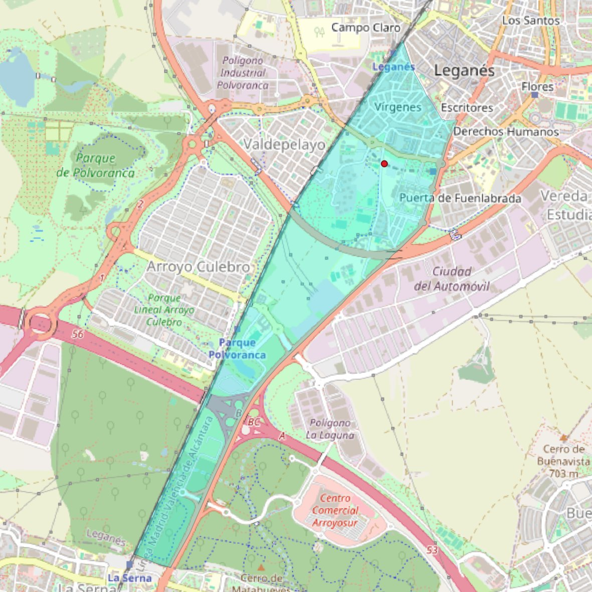

Leganés · Arciprestazgo de Leganés · Diócesis de Getafe

De cada 100 habitantes, 13 tienen menos de 18 años, 26 tienen 65 o más y 25 han nacido en otro país.
| Parroquia | Arciprestazgo | Diócesis | |
|---|---|---|---|
| Habitantes (2025) | 12.600 | 195.946 | 1.729.840 |
| Habitantes por km² | 6.462 | 4.541 | 751 |
| Edad media (2024) | 46,8 años | 44,9 años | 42,3 años |
| Menores de 18 (2024) | 13,5 % | 15,9 % | 18,2 % |
| 65 o más (2025) | 26,0 % | 22,7 % | 18,4 % |
| Índice de envejecimiento (2025) | 240 | 180 | 127 |
| Nacidos en otro país (2025) | 25,1 % | 20,5 % | 20,3 % |
| Renta por persona (2024) | 13.900 € | 15.400 € | 16.000 € |
| Personas por hogar (2024) | 2,53 | 2,65 | 2,80 |
| Hogares de una persona (2024) | 27,8 % | 23,8 % | 21,0 % |
| Estudios superiores (2024) | 22,4 % | 28,8 % | 32,4 % |
| Paro (2024) | 9,7 % | 9,1 % | 9,1 % |
Cifras de viviendas según las fuentes citadas en la ficha de cada desarrollo, en la sección «Previsión de desarrollos urbanísticos».